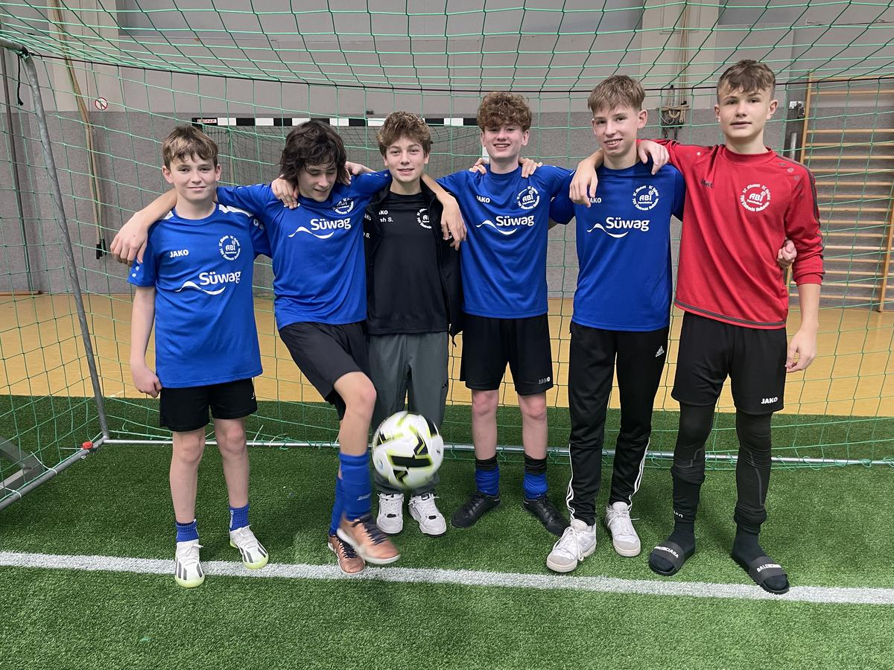

ABI C1-Junioren: 4. Platz beim Stadtteilpokal in Horb
Mit einer kleinen Truppe von 5 C1-Junioren und einem D-Junior trat die ABI-C1-Mannschaft beim Stadteilpokal in Horb an. Das Besondere an diesem Turnier war, dass es auf Kunstrasen in einer großen Halle stattfand. Zudem sorgte die Rundum-Bande für ein schnelles Spielgeschehen. 18 Mannschaften waren in 4 Gruppen aufgeteilt. Und nur der Gruppenerste kam ins Halbfinale. Das ABI-Team spielte in einer 5er Gruppe mit teils ähnlich leistungsstark eingestuften Teams. Von der ersten Minute an zeigte jedoch die Mannschaft, was sie zu leisten im Stande ist. Hallenfußball vom Feinsten mit wunderbar herausgespielten Toren. Jedes Spiel der Vorrunde konnten die Jungs klar für sich entschieden werden, auch ließen sie sich von zwei Rückständen nicht irritieren.
Im Halbfinale gegen den späteren Turniersieger aus Freudenstadt hatten die Jungs die Partie eigentlich souverän im Griff. Jedoch die harte Gangart des Gegners und die Unsicherheit des Schiedsrichters sorgte für eine knappe 3:4 Niederlage. Höhepunkt war, dass eine 2-Minuten-Hinausstellung eines Gegenspielers von der gegnerischen Mannschaft einfach ignoriert wurde und der Schiedsrichter nicht eingriff. Ein Fehler, wie er selbst nach dem Spiel zugab. Im Spiel um Platz drei war die Luft raus, die Enttäuschung über die verpassten Finaleinzug war zu groß und die Kraft reichte nicht mehr. Die beiden Gegentore fielen jedoch erst in der letzten Spielminute. Selbst hatte das Team zahlreiche Torchancen ausgelassen.
Trotzdem: Mika, Lenny, Lenni, Noah S, Robert und Linus zeigten herausragende Spiele und spielten ein hervorragendes Turnier.
#2024/cjunioren